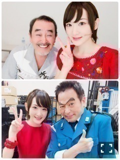
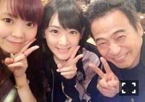

| 2016/09 27 Tue | 自分の声を認めてやろうと思ったの。 |
舞台
こちら葛飾区亀有公園前派出所
こち亀！！
無事全公演を終了いたしました〜ヽ(・∀・)ノ
東京から始まり、
大阪でも公演をしました！！
私にとって、
こち亀は高い高い超えられない難しい山でした！！
富士山よりも遥かに険しい道のりです！！
お芝居もですが、
1番の課題は
歌でした！！
アイドルとして活動していて、
一応ソロ曲もありますが、
私って
ちゃんと歌えていなかったんだなって思いました。
稽古からずっと歌を指導して下さって、
お芝居も1番話したのは坂本アキラさんだったなぁ。
私は少女 サキを演じたのですが、
ずっと一緒にいる奥山老人役の坂本さんとは
おじいちゃんと孫くらい歳が離れてました笑
だからなのか、
最初は人見知りしてた私ですが、
すぐに仲良くなって、
こち亀の台本を一緒に読んでこの時のサキはこういう気持ちなのかなぁ、
とか
奥山老人はこういう人間だから、
サキに対してこんな感情を抱くのかなとか
いっぱいお話しして、
私に沢山の事を教えて下さいました！
大好きなおじちゃんです！！

両津勘吉役のラサール石井さん
私をこのカンパニーに呼んで下さり、
優しく、しっかりと見守って下さり本当にありがとうございました！！
石井さん、
最初はあのテレビでみた人だー！！って興奮しました笑
石井さんのこち亀に対する愛
舞台に対する熱い思いが一個一個刺激になり、
一緒に舞台に立てて、最高に嬉しかったです！
みんな大好きな人です

私に沢山の大切な事を教えて下さって本当にありがとうございました！！
うわーん(´；ω；｀)
写真見てるだけでさみしくなってきた〜(´；ω；｀)
えーんまた舞台一緒にやりたいです〜(´；ω；｀)

写真を見て左側の女性
えっちゃん！！
ソウルフルメタルのピンチ！
本番始まって、
休演日開けから毎日歌を見てもらっていました！
発声からやって、
お芝居をどう歌にのせるかなどなど、
お陰様で！
なんとかいこまちゃんでも歌を歌えるようになりました(´；ω；｀)
ありがとうございました！
でも、これからも歌教えて下さいませ〜！！
まだまだ写真あるのでちょいちょい載せていきますねっ！！
私は、こち亀に挑戦して本当に良かったです！！
サキちゃんありがとう！
また、会えたらいいねっ
貴女に出会えて良かったよ。
私に色んな勇気をくれてありがとう。
さっ！！
乃木坂46の生駒里奈に戻ります〜
へばなっ☆彡
コメント(1111)
2016/09/27 18:30